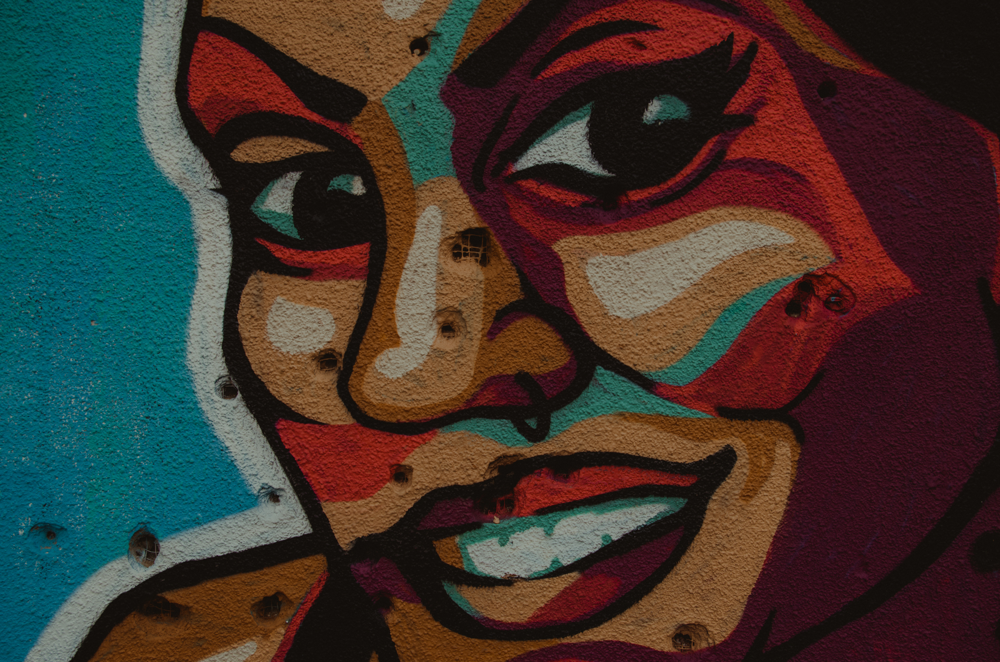
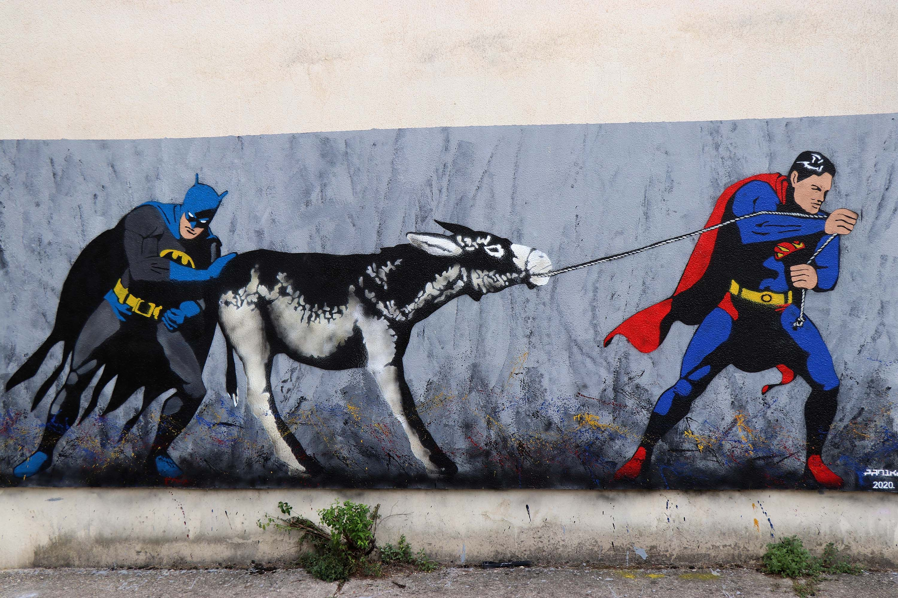
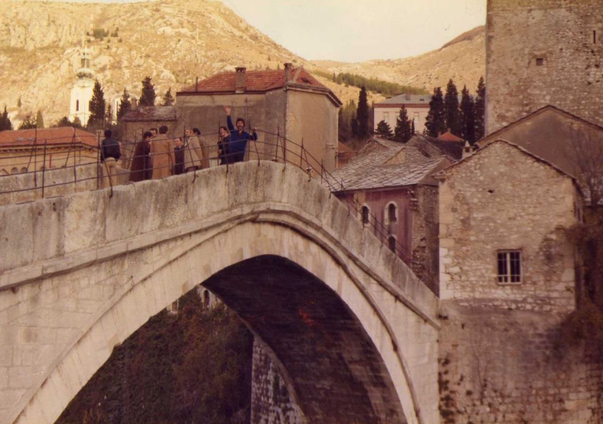
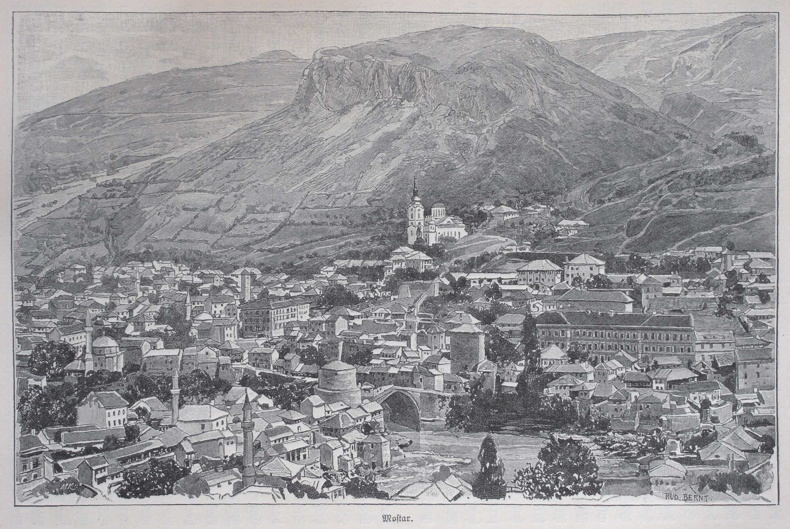
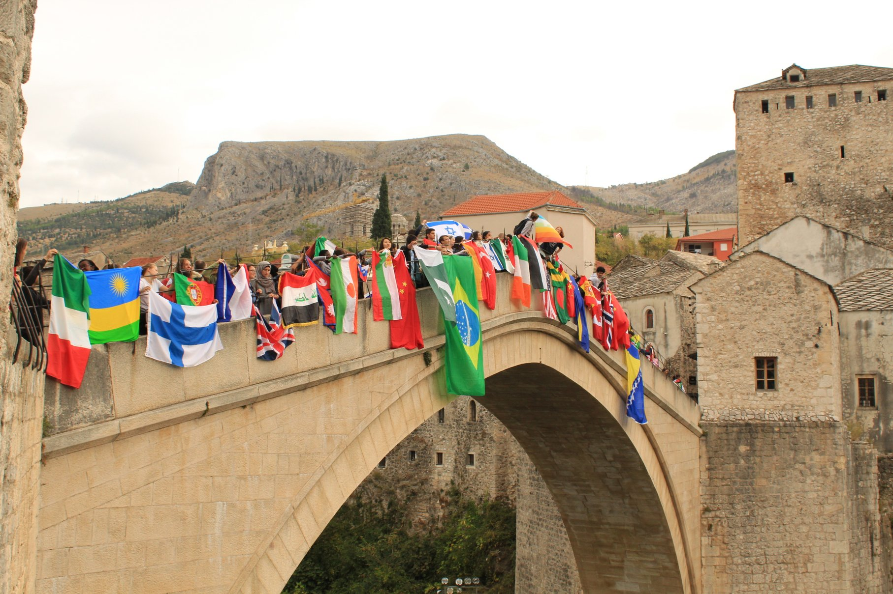

WELCOME Hello traveler, welcome to Mostar, Bosnia and herzegovina. I don't really care why you visited us but I am here to make your visit spectacular. Now before all the nice places and events that you will see, first you need to know where you have come. Mostar is a place that lived through a lot and its people are one of the most interesting and annoying people in the world. To find out more, I strongly recommend staying on this page, just so you can understand why we don't care what the purpose of your visit is.

CITY
This is a very specific topic that I am not sure I can explain in total. As you enter the city of Mostar, the first thing you notice is the people. If you are not from the southern world you will have some difficulties understanding it. This is a nation located on the border of two worlds. The East and the West. It, alongside its people, lived through major historical events, many occupations and wars. Imagine how it is living in such an area.
So naturally, people have developed a coping mechanism for all those changes, and it is quite weird. That is especially present in the city of Mostar. It helps that Mostar is a pretty small city of 100 000 people at most. Combined with the great hospitality and friendliness of citizens, everyone knows each other. The city works like a big community and almost primal like human relations where helping and taking care of others is a primary activity for everyone. Mostar serves as a cradle of culture, a place where nations collide and live together for centuries.
People here are divided in so many ways (religious, by beliefs, nation...) and yet they all live homogeneously one with another. As such, they are intricate and fragile. Any third party relation can and does mess with the overall life of these people. This is why residents of Mostar have a specific relationship with visitors to their city. It is mocking, sarcastic and almost British like. Can be rude at times. It is very specific and connected to the current situation that not a lot of people can understand. It is extremely hilarious to the ones understanding it and not funny at all to those who are witnessing it for the first time.

HISTORY

Mostar evolved as an Ottoman frontier town in the 15th and 16th centuries, as well as during the Austro-Hungarian period in the 19th and 20th centuries, spanning a deep valley of the Neretva River. Mostar has long been known for its old Turkish homes and the Stari Most Bridge, which is named for it. However, during the 1990s violence, most of the ancient town was destroyed, including the Old Bridge, which was created by the renowned architect Sinan. With the help of an international scientific commission established by UNESCO, the Old Bridge was recently repaired, and many of the edifices in the Old Town have been restored or rebuilt. With its pre-Ottoman, eastern Ottoman, Mediterranean, and western European architectural characteristics, the Old Bridge region is a must-see.

The settlement is situated in a valley of the Neretva River, between Hum Hill and the bottom of the Vele Mountain, and was formed as an urban structure in the 15th century on the crossing of a river and a land route. According to documented historical records, this little village had two towers surrounding the bridge, which was built in 1459. Mostar, the current name, was first attested in 1474 and is derived from "mostari" - bridge guardians. Mostar grew as an Ottoman frontier town in the 15th and 16th centuries, as well as during the brief Austro-Hungarian period in the 19th and 20th centuries. Mostar has long been noted for its old Turkish homes and the Stari Most, or Old Bridge.

The historic area of Mostar is the consequence of a number of years of interaction between forces of nature and human ingenuity. The global synthesis of life phenomena represents centuries of cultural continuity: the bridge and its fortifications with rich pre-Ottoman archeological strata, religious edifices, residential zones (mahalas), arable grounds, dwellings, bazaar, and its public life in the streets and water. A common life of Muslims, Christians, and Jews was depicted in the architecture as a sign of tolerance. Mosques, churches, and synagogues coexisted in this region, demonstrating that Roman Catholic Croats with their Western European culture, Eastern Orthodox Serbs with their Byzantine components, and Sephardic Jews coexisted alongside Bosniaks-Muslims for centuries.
MEMORY